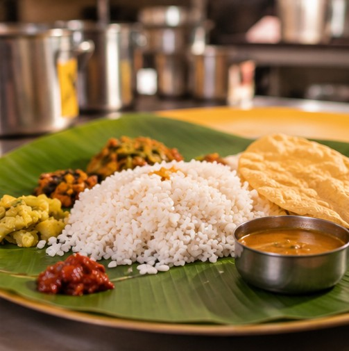

01 / COMMUNITY MEALS
Breakfast and lunch, with care.
We provide free breakfast and lunch support outside the railway station in Kasaragod for people who need a meal. The initiative is carried out in partnership with Lalit Resorts and Aster Hospital.
Our aim is simple: make a nourishing meal more accessible, with dignity and kindness.